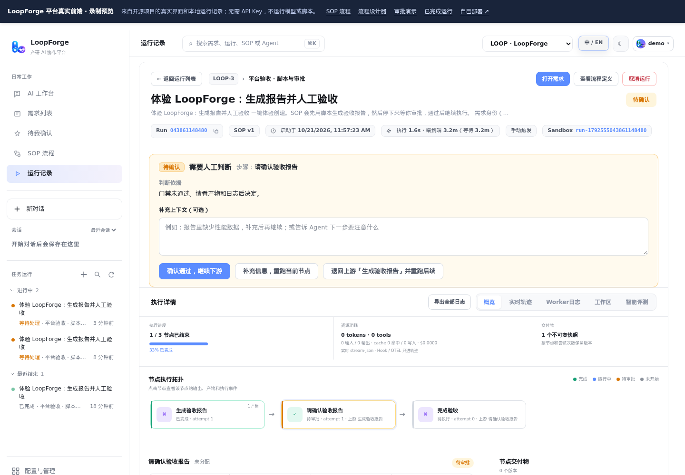
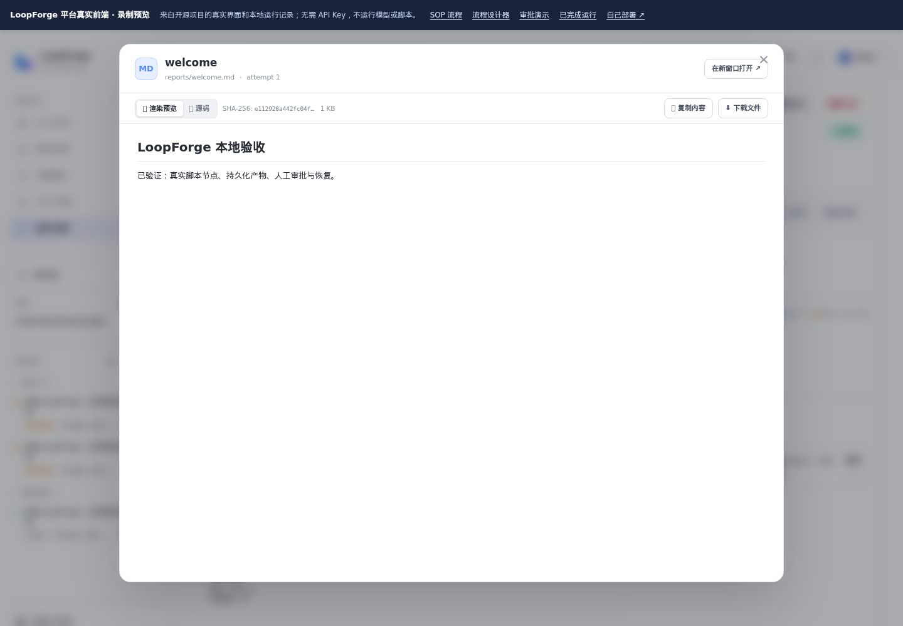

Agent + 脚本 + 人
在真实设计器里连接四类节点：Agent、脚本、人工审批和子 SOP。不需要 AI 的构建、Lint、测试，用确定性脚本完成。
看流程设计器 →MIT 开源 · 可自主部署 · 面向团队的 Agent 交付平台
不是又一个聊天窗口。LoopForge 把编程 Agent、确定性脚本和人工决策放进同一条 SOP：谁来设计、谁来实现、谁来评审、什么时候跑测试、由谁验收，都由你的团队定义。
预览使用开源项目真实前端 + 本地实例录制数据，无需账号或 API Key。不是在线模型服务。

从一条需求，到可检查的交付
同一条 SOP、同样的阶段和检查。实现、评审和测试由不同角色完成；关键节点暂停，等你确认后再推进。
验收不通过，可以打回到指定节点返工。流程可发布版本、复用子 SOP，并按项目配置角色、规则、Skills 和 MCP。
在真实设计器里连接四类节点：Agent、脚本、人工审批和子 SOP。不需要 AI 的构建、Lint、测试，用确定性脚本完成。
看流程设计器 →为实现、评审、测试定义独立角色，每个角色都有自己的执行器、模型、指令和工具。内置后端、前端、缺陷修复、产品方案 SOP。
看 SOP 目录 →检查报告和产物后放行，或附上上下文打回返工。节点状态、日志、工具轨迹和产物版本集中呈现。
看运行与审批 →不是重画的样机
下方截图来自独立部署的 LoopForge 实例。预览直接打包开源仓库中的 Web 前端，并回放该实例的接口响应；不会假装模型正在运行。

每个节点的状态、输出和验证证据都在同一条运行记录里。预览可以体验一次审批结果的本地回放。

录制示例实际执行了脚本，保存验收报告，并在审批后生成完成记录。产物可以查看源码和渲染预览。
此示例无需模型 Key。涉及 Agent 的真实任务需要自部署，并配置你自己的执行器凭据。
你的流程 · 你的代码 · 你的运行环境
需要 Docker（含 Compose）和 Python 3。安装完成后打开 localhost:8090，创建账号，再通过首页引导跑通第一条 SOP。
git clone https://github.com/Tencent/LoopForge.git
cd LoopForge
bash scripts/install.sh默认面向可信团队，仅监听本机。对公网开放前请阅读账号、权限及 Docker 沙箱的部署边界；预览页不是可执行的公网实例。
一起把 Agent 带进真实交付
欢迎提交 Issue、PR，分享团队使用 SOP 的实践，完善执行器适配与平台体验。